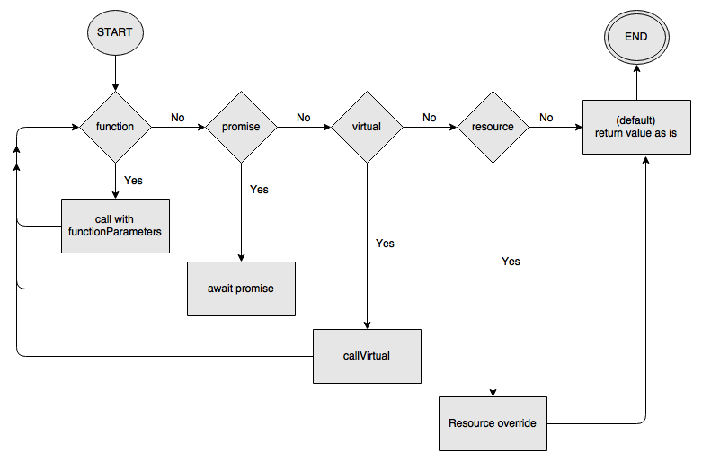

Documentation
Learn how to use the framework effectively.
evaluate

A different action is taken depending on the type of the value. After the action, if the obtained value is different from the original value, then the evaluate function is called recursively on such new value. If no step applies to the value, then the evaluate function just returns the value as is.
The recursive approach allows for greater composability, in fact the function to evaluate might return a promise that returns a virtual and so on.
Let’s see these actions.
1) If value is a function, then that function is called by
spreading as arguments the options.functionParameters array, if such
option isn’t set, then the function is called without arguments.
Example:
The Pipe service sets the options.functionParameters to the resources
object, this allows the user to specify a JSX children as a function
expecting the resources obtained up to that point.
2) If value is a promise, then the system just awaits the
resolving of such promise, so to obtain the resolved value.
3) Virtual
If value is a virtual, then the callVirtual function is used to call the service associated to such virtual. The callVirtual will also create a new options object based on the current options and on any options specified by both the virtual (as attribute) and the virtual service (as static property).
The callVirtual will also retrieve the webmiddle instance to use in the recursive call (i.e. down the call chain).
Thus, the evaluate function will use the new webmiddle and the new options object in the recursive call. That way they will be passed down the call chain.
Example:
virtual:
<MyService options={{ retries: 10 }} />Where MyService is defined as follows:
const MyService = () => (
<MyOtherService />
);In this case, evaluating virtual will lead to <MyOtherService />
to be evaluated recursively with the { retries: 10 } options.
See the callVirtual section for details on how the new options and the new webmiddle are calculated.
Once the recursive call completes, the eventual temporaneous webmiddle correlation that was created will be destroyed by removing the temporaneous parent.
Another step that is executed after the recursive call completed is the resource override: if the result is a resource, then the resource name and contentType are replaced with the name and contentType attributes of the top virtual, if any.
Example:
virtual:
<MyService name=”myResourceName” />Let’s suppose that MyService eventually returns the following resource:
{
name: 'other',
contentType: 'text/plain',
content: 'some content here'
}Then such resource will be transformed to:
{
name: 'myResourceName',
contentType: 'text/plain',
content: 'some content here'
}The resource override is a must when composing services, as it makes sure that resources will have expected names, since they will be often referenced by their names, such as in the Pipe and Parallel services.
4) If value isn’t a resource, then the system checks if the
options.expectResource is true, in such a case, an exception will be
thrown.
5) As default, the value is returned as is.